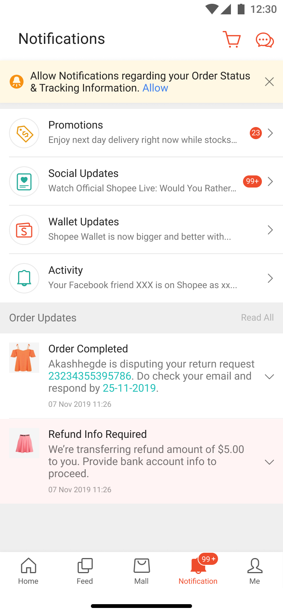
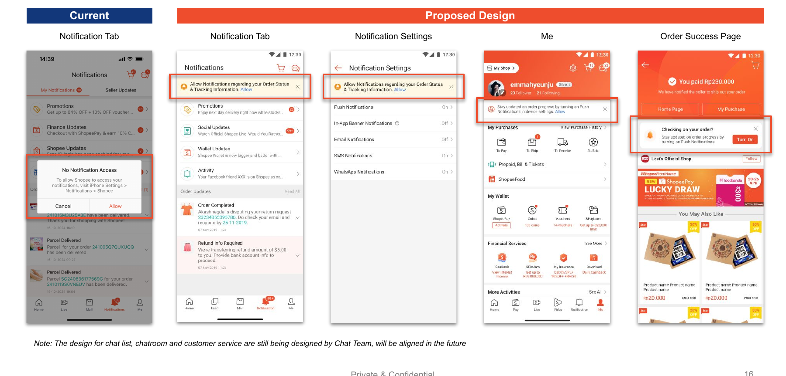

A large portion of Shopee users had device notifications turned off, meaning we couldn't reach them at all. We needed a way to win back those permissions, at scale, without annoying the users who never wanted to grant them in the first place.
Push notifications are one of Shopee's core re-engagement channels. But a significant proportion of users had their device notification permissions turned off. Either they denied the permission during onboarding or turned it off at some point after.
Once a user has denied device permissions, the app can't send push notifications to them at all. The only way to recover those permissions is to prompt the user to go into their device settings and re-enable them, which is a high-friction ask.
The challenge was figuring out when, where, and how often to show that prompt. Too aggressive and users would permanently dismiss it. Too passive and the problem wouldn't move.
We built a notification prompt capability that could appear across five surfaces inside the app. Each placement was chosen because it was a moment where the user was already engaged and the prompt felt relevant rather than intrusive.


We ran an AABCD test to evaluate different prompt strategies. The treatment groups varied in how aggressively the prompt was shown and when the cooldown kicked in.
The key question wasn't just "which group gets more opt-ins." It was "which group gets more opt-ins without generating a downstream drop in engagement or satisfaction." Winning permissions from users who then immediately turn them off again isn't a real win.
We recommended Group B (cooldown after 4 dismissals) because there was no statistically significant difference in opt-in rates between more aggressive and less aggressive groups, meaning there was no upside to being pushier and a clear reputational downside if we got it wrong.
The most interesting debate on this project was whether to recommend the more aggressive prompt strategy. The data showed no significant difference in opt-in rates between groups, which meant the aggressive version wasn't actually better at recovering permissions. It just showed the prompt more.
That made the decision easy from a data standpoint. But it's worth noting that when there's no clear winner in an ABT, the right call isn't always "ship the control." In this case, recommending the least-interruptive strategy was the right call precisely because the downside of getting it wrong (users blocking all notification prompts permanently) was much worse than the upside of squeezing out a marginal improvement.
This is a pattern I think about a lot in product decisions: when the expected value of options is similar, default to the one with the lower worst-case outcome.